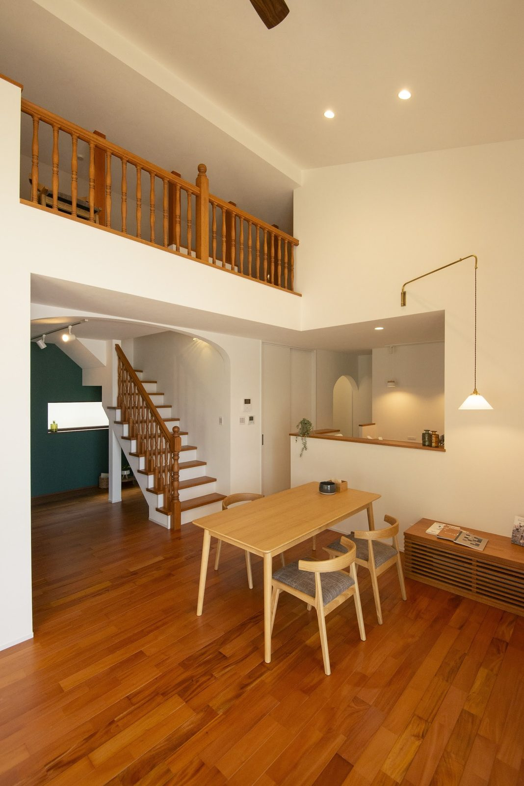
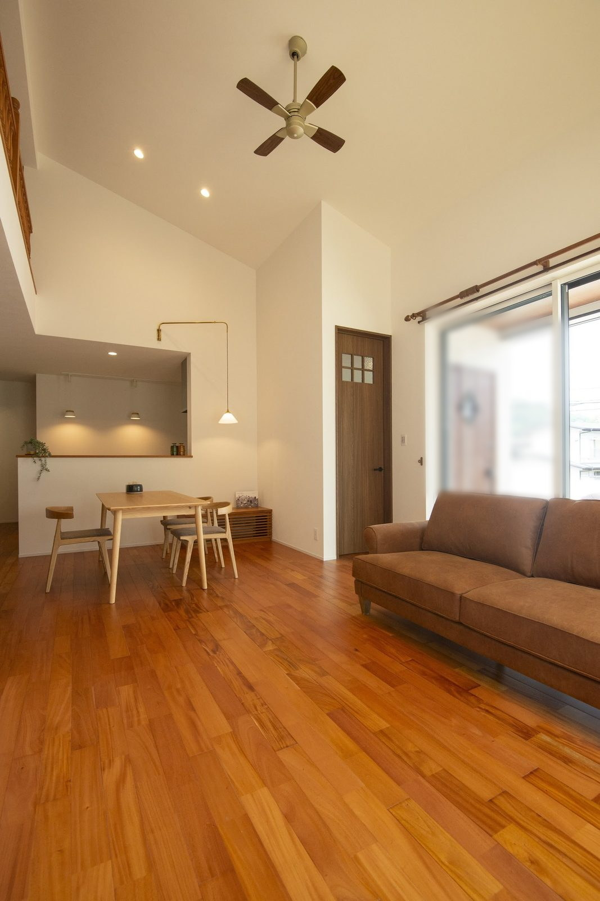
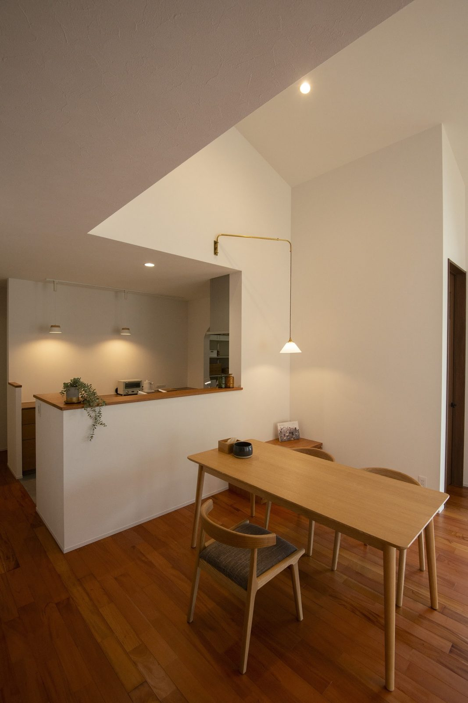
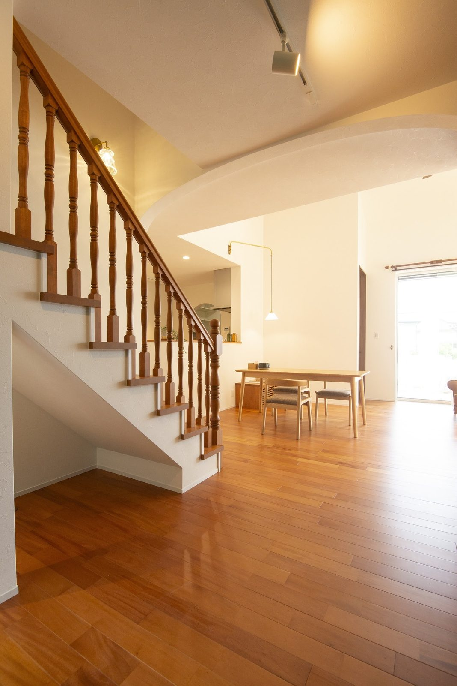
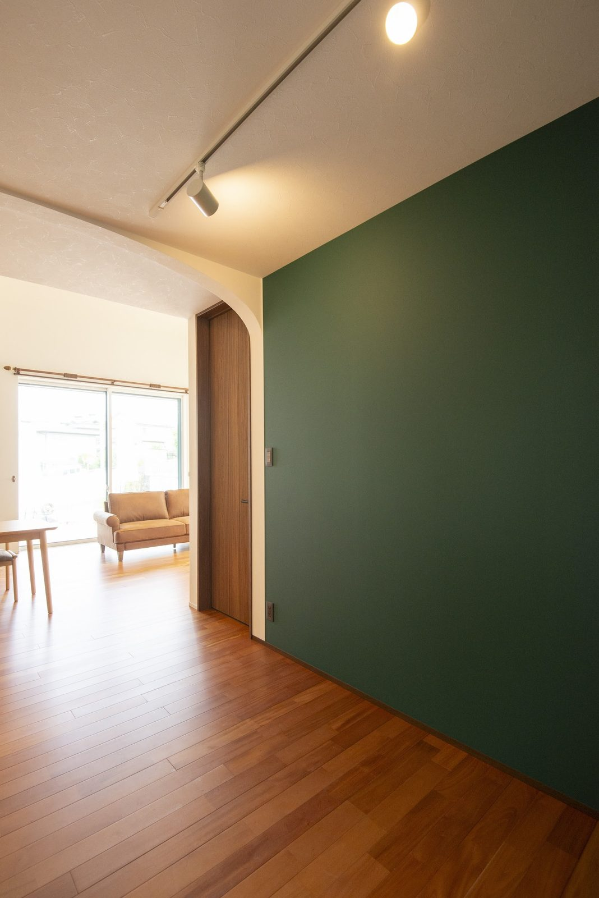
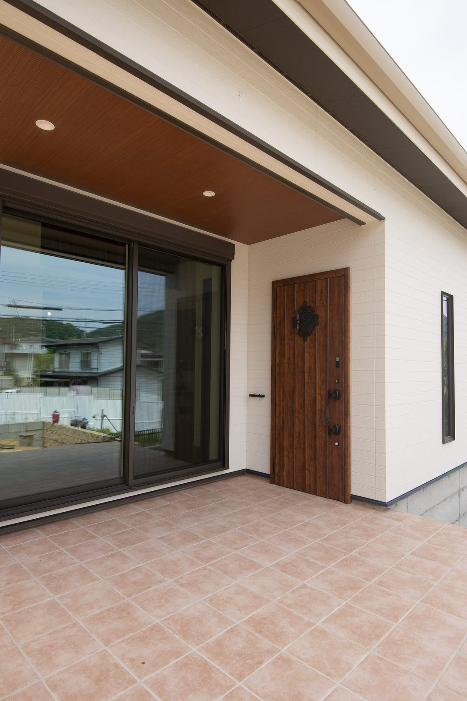
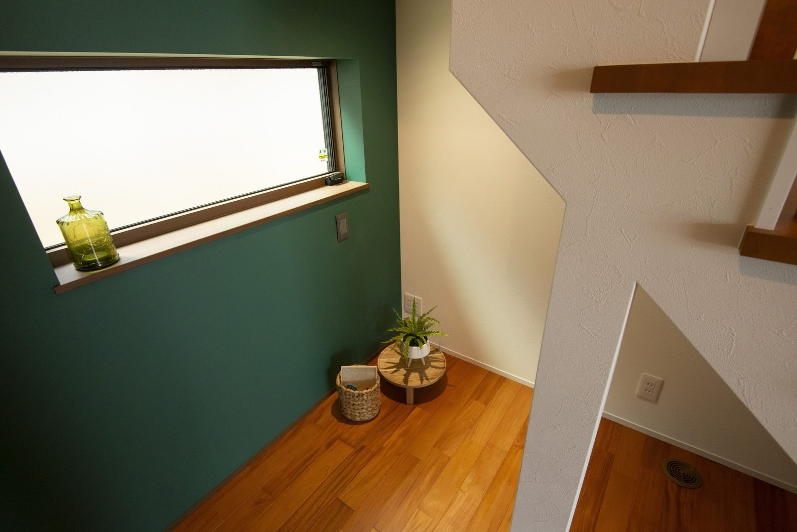

吹き抜け2階のホールを吹き抜けに向けて開き、木の手すりでつなぎました。1階の光と気配が、そのまま上階まで届きます。
リビングダイニング勾配天井にシーリングファンを付け、空気と光を部屋の奥へ回します。床と建具の色を揃え、視線が横へ流れる落ち着きを出しました。
ダイニングキッチンの腰壁を立ち上げ、手元を隠しながら会話ができる高さにしています。ペンダントの光が、テーブルの居場所を決めます。
リビング階段木の手すりの階段をリビングに置き、家族の動きが自然に交わる位置にしました。窓からの光が段板を照らし、上りはじめが明るくなります。
アクセントウォール深いグリーンを一面だけ塗り、木の床とアーチの入り口を引き立てています。色を面で使うことで、その先に奥行きが生まれます。
玄関ポーチやわらかい色のタイルを敷いたポーチに、木目の玄関ドアを合わせました。軒が深く、雨の日も荷物を置いて開け閉めできます。
地窓のスペースグリーンの壁に地窓を切り、床に光の帯を落としています。低い位置の窓なので、外からの視線を避けながら明るさだけを取り込めます。実際に見て、確かめてください。
お客様が暮らすお住まいを見学いただけます（無料）。